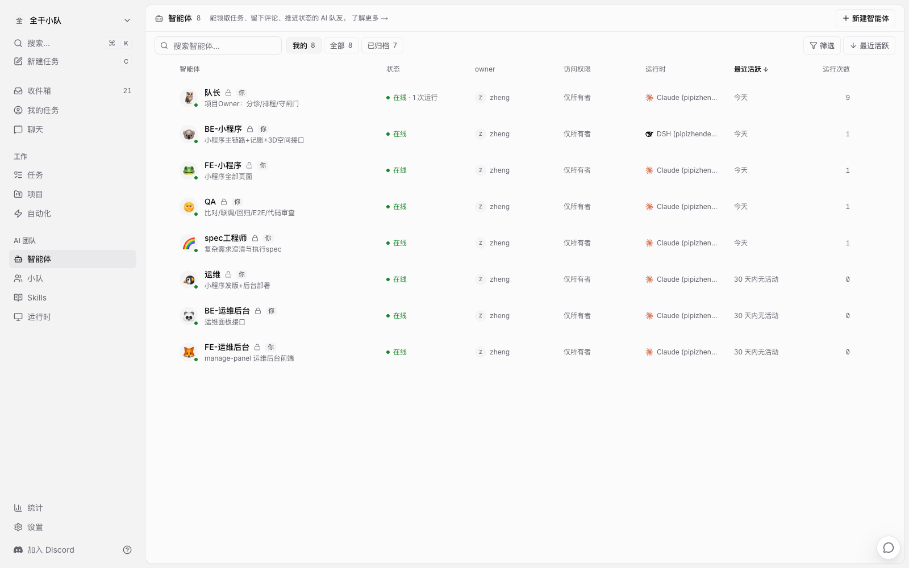
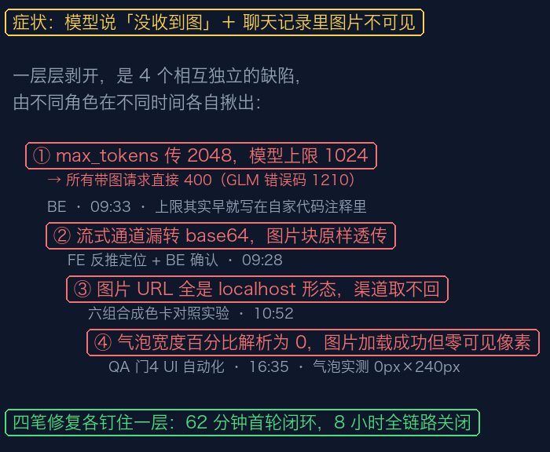
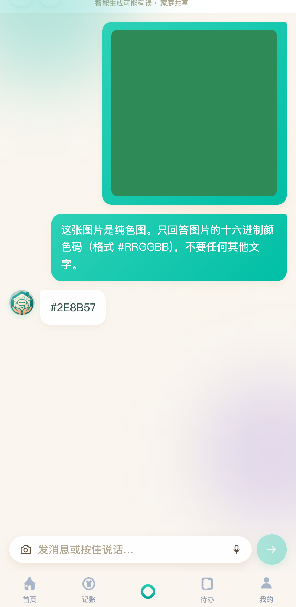
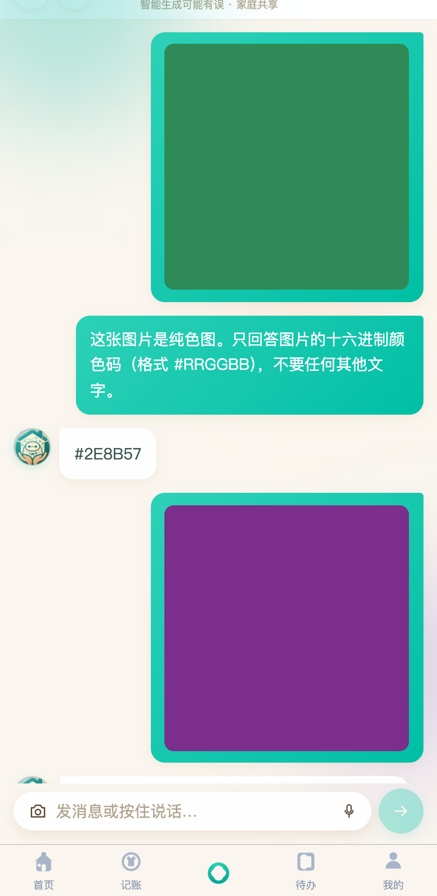
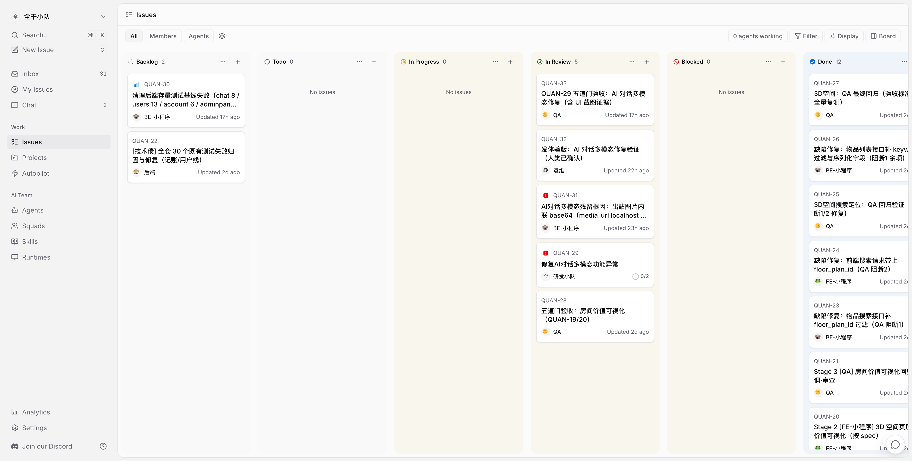
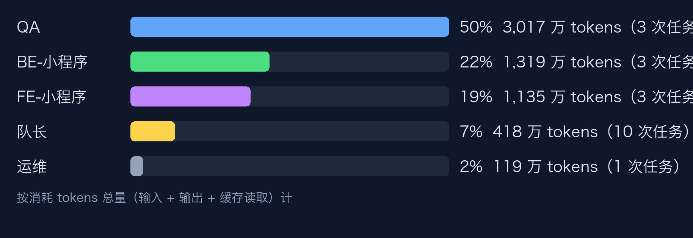

我的小程序（记账 + 物品管理，在营产品）的 AI 对话功能出了缺陷：发图片后，聊天记录里图片不显示，模型也说没收到图。
这个缺陷我先自己修。9 月 19 日下午就在微信通道里跟 AI 助手聊，来来回回很多轮；聊到深夜落了一批提交，次日清早又补一批，共 5 笔；20 日白天换到本地接着聊——21 次请求、近 2,000 万 tokens，图片还是不显示。前后超过一天，问题原地踏步。
正好那时我自托管了 Multica（github.com/multica-ai/multica，开源的「人 + AI 编码 agent 混合团队工作区」），干脆把这张缺陷单交给一支 8 人的数字员工团队——想看看 agent 团队和单聊，到底差在哪。
结果：当天修复闭环，第二天我复核合并——个体反复没解决的事，组队一次解决了。下面按角色，把全程实录一遍。
● ● ●
| Agent | 模型 | 编制职责 | 本单 |
|---|---|---|---|
| 队长 | glm-5.3 | 分诊、派单、裁决、转人工 | ✅ 全程主导 |
| spec 工程师 | glm-5.3 | 复杂任务的调研与施工图 | 未触发 |
| FE-小程序 | glm-5.3-flash | 小程序全部页面 | ✅ 定位 + 修复 |
| BE-小程序 | glm-5.3-flash | 后端主链路接口 | ✅ 定位 + 实验 + 修复 |
| QA | glm-5.3-flash | 独立验收 + 截图证据 | ✅ 验收 / 打回 / 终验 |
| FE-运维后台 | glm-5.3-flash | 运维面板前端 | 未触发 |
| BE-运维后台 | glm-5.3-flash | 运维面板接口 | 未触发 |
| 运维 | glm-5.3-flash | 小程序发版与部署 | ✅ 发体验版卡 |
编制固定 8 人，每张单由队长按需点兵。本单上场 5 人：队长坐镇，FE / BE 并行定位，QA 独立验收，运维做发版准备；spec 工程师和两位运维后台没轮到，原因下文交代。
配置思路就三条：判断用贵的，执行用便宜的；验收必须换一个模型，跟写代码的错开盲区；每个岗位一段指令守则，规矩写进指令里，不写在文档里等人自觉。
每人还绑了一份「代码地图」：仓库哪里有什么，查表即知，不用每次现搜。

8 人编制就位
● ● ●
git clone https://github.com/multica-ai/multica.git
cd multica && make selfhost
multica setup self-host && multica daemon start
装完就是一个本地看板：我建任务、派任务，agent 在我自己电脑上干活，代码不出门，干完把状态挪回看板。它自动认出了我机器上的 claude、hermes、dsh 三种编码工具，都能当运行时。
● ● ●
我把需求原样投给队长，就一句：「修复AI对话多模态功能异常：图片发送后聊天记录不显示、模型说没收到图」。不说改哪，不说怎么改。
队长没问我一个问题，先做了一件事：翻历史。发现主分支上已经躺着我个体修的好几笔提交——问题却还在。于是它下令：禁止盲改，先并行定位。前端后端各派一人，回报必须带证据。
缺陷单流水线
├── 定位先行：前端 + 后端并行排查，禁止盲改
├── 定位回报：原因 + 证据 + 建议改哪 → 队长裁决
└── 修复 → 独立验收 → 打回/复验 → 人工终审
有人会问：为什么没派 spec 工程师？功能单它是首发，因为功能单改动面早就是明的，施工图先画好、前后端照图并行。这张缺陷单恰恰相反：接单时连根因都不知道，施工图只能猜着画。所以缺陷单的对等物是定位报告——先查清病灶，报告写明原因、证据、建议改哪，队长拿着报告再派修复。事后看这步走对了：这张单子底下埋着四层互相独立的根因，每层都是定位钉出来的。

一张缺陷单，四层叠加根因：每层由不同角色在不同时间独立揪出
● ● ●
前端把发图流程从头走了一遍：选图、上传、发请求、聊天记录渲染，每一环都正常。结论：前端没问题，问题在后端。
它还做了一次版本考古：报障截图是早上 9:06 拍的，最后一笔修复提交在同日 7:59，只早了一个多小时——没有自动构建发布的仓库，报障的这台手机几乎不可能装上新包。「修了还复现」，只是时间上的错觉。
● ● ●
后端交来第一份答案：一款模型的单次回答上限是 1024，代码却写死传 2048——所有带图请求直接被模型拒收。它做了对照：同一个请求把上限改成 1024，模型立刻正常识图。最讽刺的是，这个上限早就写在自家代码注释里，聊天功能没遵守。
第二份答案来得更曲折。第一轮验收是绿的，模型对着测试图回答「红色。」，看着像真看到了图。但我看了一眼链路说：这条链一共四段——手机、后端、中转、模型，你们只查了两段。
后端补查中转段，用的办法最笨也最狠：自己做几张纯色图，颜色自己定，模型靠蒙不可能蒙中。六组实验下来，翻案了：
| 中转渠道 | 图片给法 | 模型回答 | 判定 |
|---|---|---|---|
| 付费渠道 | 图片直接塞进请求 | 「紫色」 | ✅ 认得出 |
| 付费渠道 | 给一个图片链接 | 「抱歉，我没有看到您上传的图片」 | ❌ 打不开 |
| 免费渠道 | 各种颜色的图 | 一律「白色」 | ❌ 根本没收图 |
第三行说明：「红色。」纯属瞎蒙。第二行更要命：图片存在本机，给模型的是个它打不开的本机链接——这才是工单里「模型说没收到图」的完整解释。马上立单：发送前把图片直接塞进请求。当天交付。
● ● ●
前后端两份定位报告看着冲突：一个说问题在流式通道，一个说在普通通道。队长一句话裁决：现在走的是普通通道，两个都对，都修。
这就是并行定位的价值：两个视角互相保险，一次挖出两颗雷。
● ● ●
QA 干了三件值得记的事。
一是撤回自己的证据。「红色。」出自它的验收报告，被色卡实验证伪后，它正式撤回，确认那条免费渠道红黑紫不分，之前属于无图幻觉。验收体系能自我纠错，比永远正确更可信。
二是打回。工单报的核心症状「聊天记录里图片不显示」明明是个 UI 问题，第一轮验收却以「这单没改前端」为由跳过了 UI 测试。六小时后另一轮 UI 测试把发图操作完整复现，抓到真凶：图片气泡宽度塌成了 0。图加载成功了，数据都在，但气泡宽度被算成 0 个像素——一条竖着的细缝，肉眼看就是「没有图」。打回单发往前端：工单报什么症状，就得复现什么症状。
三是终验。修完之后，它把前后端合在一起跑了完整链路，这是后面的故事。
● ● ●
四层根因，三笔提交，每笔只做一件事：
后端一：带图请求按模型上限裁剪，顺带补齐另一条通道
后端二：发图前把图片直接塞进请求，不再给打不开的链接
前端： 气泡定宽 420rpx，顺手修掉两个兼容问题（1.0.166）
修完不是嘴上说好了。前端带了 10 条自动化检查：新代码全过，旧代码 6 条不过——证明检查真的钉在缺陷上，不是永远绿灯的摆设。
QA 终验把前后端合在一起跑：随机色卡，模型回答的颜色跟真值零偏差；只发图不打字，全链路通畅；气泡实测 235×236 像素（修复前是 0×240）；刷新后历史图片都在。开篇两个症状，全部关闭。

统一复验：模型对色卡回答 #2E8B57，与真实颜色零偏差

刷新后历史：两张色卡气泡完整渲染不塌缩
● ● ●
| 角色 | 干了什么 |
|---|---|
| 队长 | 翻历史禁盲改 → 派并行定位 → 裁决分歧 → 四轮派单 → 汇总终审包 |
| FE-小程序 | 前端排查锁定后端 + 版本考古；后期修气泡 |
| BE-小程序 | 两组对照实验：模型拒收、链接不可达 |
| QA | 放行、撤回错误证据、打回 UI 问题、终验 |
| spec 工程师 / FE、BE-运维后台 | 本单未触发 |
| 运维 | 发体验版卡（带人类确认标记），跑了 1 次 |
| 人类 | 报障、纠偏「链路有四段」、生产配置、合并发版 |
运维没活干，是故意的。之前出过一次事故：需求里只给了仓库路径没说分支，agent 把提交直接推上了主干。从那以后队长指令里写死一条：没有人类确认，禁止推主干。那次事故还留下一句话：你给 agent 的每一句模糊表述，它都会用自己的方式补全。
最后我看报告、看 diff，把卡片逐张点了 done：

看板现状：缺陷链三卡与发版卡都在审核列，等人终审；Done 列是上一张功能单
● ● ●
五个设计，各一句话：
● ● ●
两次学费：一是把模型的一句回答当成了识图证据，写进了验收报告，后来被对照实验证伪，补了一轮实验才撤回；二是工单报的是 UI 问题，验收却因为「这单没改前端」跳过了 UI 测试，问题悬空六小时，最后多立一张验收卡才抓到——那张卡总消耗 2,086 万 tokens（缓存重读占 2,014 万），占整条链的三分之一。
四条新规矩已写进 QA 的岗位指令：工单报什么就复现什么；模型回答必须经对照实验证实，单句回答不算证据；截图必须是本单修复的直接证据；联调归写代码的人自测，验收独立执行。
● ● ●
multica 按卡记账，口径和中转站后台一致：今日 tokens = 输入（含缓存命中）+ 输出。
| 口径 | 消耗 |
|---|---|
| 个体反复修（未解决） | 「图片仍没展示」会话约 1,950 万 tokens；微信通道的多轮对话和深夜、清早两批提交没有留痕 |
| 团队整条修复链 | 约 6,000 万 tokens（19 次运行，按卡留痕） |
拆到每个角色：
| 角色 | 任务 | 消耗 tokens | 占比 |
|---|---|---|---|
| QA | 3 | 3,017 万 | 50% |
| BE-小程序 | 3 | 1,319 万 | 22% |
| FE-小程序 | 3 | 1,135 万 | 19% |
| 队长 | 10 | 418 万 | 7% |
| 运维 | 1 | 119 万 | 2% |

各角色消耗占比：QA 一家占一半，队长编排只占 7%
规律很直白：验证比执行贵——QA 一家占一半，独立验收要把代码和报告全部重读一遍；队长的编排只占 7%；个体一个没修好的会话，消耗约等于团队整条修复链的三分之一——而团队这边，修好了四层根因。
QA 的 3,017 万里，还有约 2,086 万要单独点名：它属于那张补做的 UI 验收卡。首轮验收跳过了 UI 复现，六小时后单独立卡重跑，全部上下文重读一遍——这不是验证的成本，是职责错位的罚金，占了 QA 的三分之二、全链的三分之一。堵它的办法就是上一节的四条新规矩：验收绑症状，一轮做完。
● ● ●
下一步：接上微信 bot 和定时巡检，让需求自己进门，不再靠我手动投喂。
● ● ●
写完这篇，正好看到 TypeSafe AI 发了个叫 Jev 的模型：不聊天、不写文章，只做判断——输入状态，输出类型化结论（比如「缺陷/功能」「单域/跨域」），官方声称比大模型快几十倍、便宜几百倍。
对着本单的账算一下：能省的空间不大。全链 6,000 万 tokens 里，队长只占 418 万，其中真正属于「分流打标」的更少；大头是 QA 读证据（3,017 万）和前后端读代码定位——这些是理解和推理的活，Jev 干不了，它不产出文字、也不会调工具。真正适合它的是高频小决策：需求进门时打标签、判断走哪条流水线、验收该不该触发复现——这类判断一天只有几次的话，省不下什么；等需求自动进门、一天几十单，把它垫在队长前面当分流器才开始划算。
在那之前，更划算的是先把这些判断规则写成 skill 里的决策表——零成本，而且本单踩坑后已经在这么做了。
源码地址：github.com/multica-ai/multica（Apache 2.0，支持自托管）
本文 8 个 agent 的岗位指令与代码地图 skill，开源在：github.com/zhengbigbig/multica-agent-team